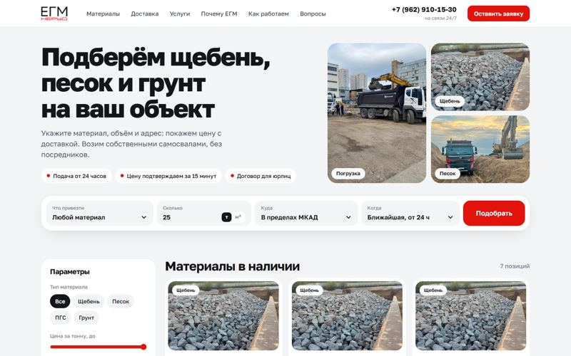
01стиль ПИК (pik.ru)Главный экран — поиск-подборщик «Что привезти · Куда · Когда» с плотными фильтрами. Ниже выдача карточек-«объектов» (материалы как…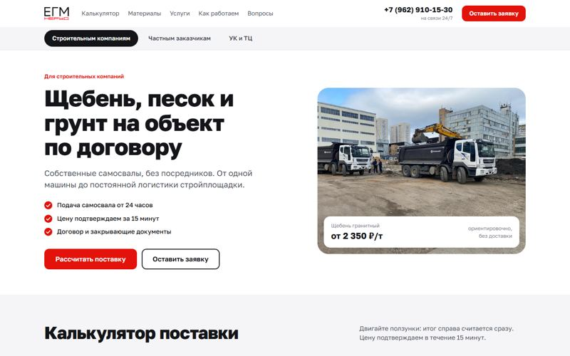
02стиль Альфа-Банка (alfabank.ru)Вкладки по аудиториям сверху: «Строительным компаниям / Частным / УК и ТЦ». Каждая вкладка меняет оффер. Калькулятор оформлен как…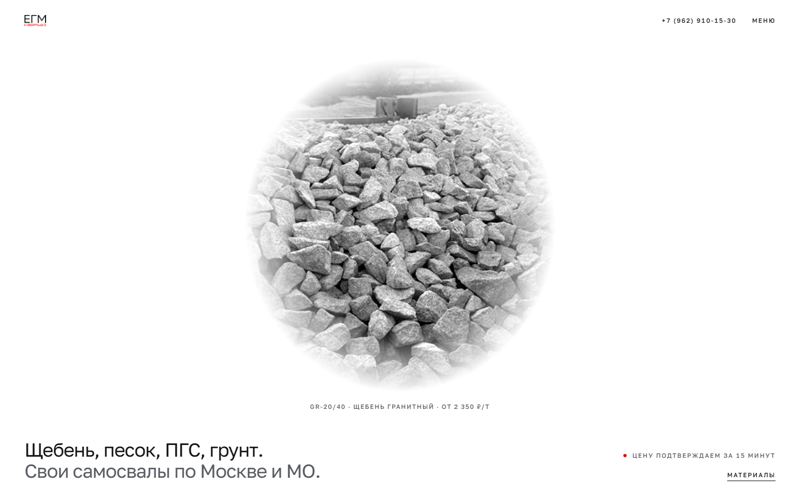
03стиль YeezyПустой белый экран, сетка материалов на белом, подписи-коды (GR-20/40, SND-W, PGS-01). Почти без текста. По клику открывается оверлей…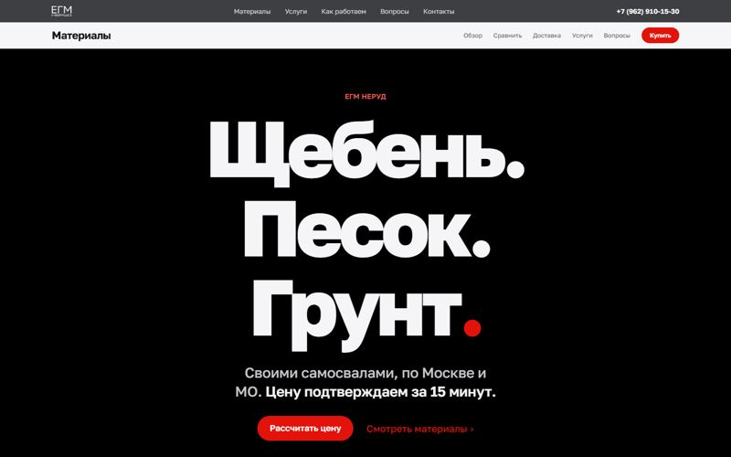
04стиль Apple (apple.com/iphone)Скролл-история: гигантские заголовки, липкие секции по каждому материалу с плавной сменой. Таблица «Сравнить материалы» (фракция…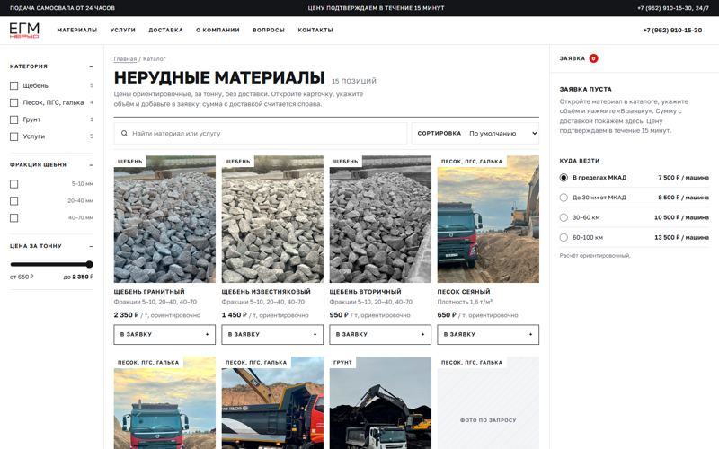
05стиль ENDClothing / интернет-магазина. Каталог-листинг с сортировкой и фильтрами слева. Карточка открывается в выезжающей панели (фото, фракция…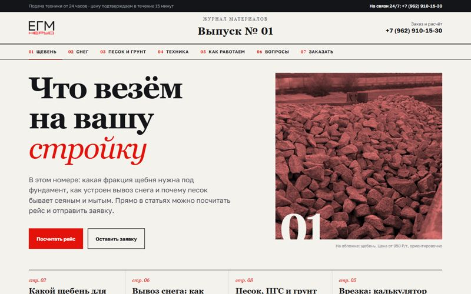
06редакционный журналОбложка, «номер» выпуска, статьи-разделы: «Какой щебень для фундамента», «Вывоз снега: как работает». Сетка как в журнале, смешанные…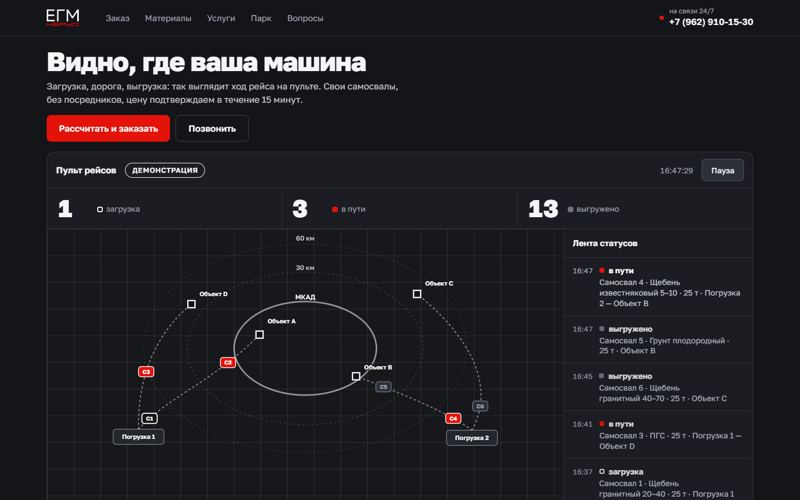
07«живой пульт»Главный экран — схема с самосвалами в работе (макет, подписанный «демо»), лента статусов «загрузка / в пути / выгружено», счётчики. Идея…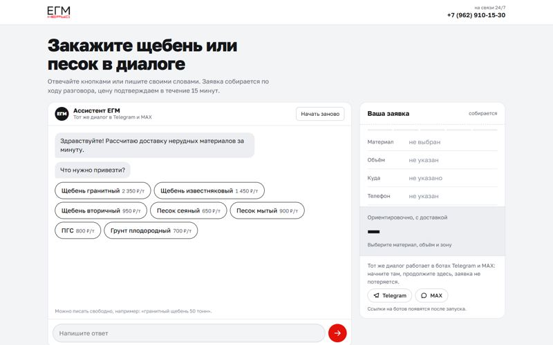
08сайт-диалогВся главная — чат с ассистентом ЕГМ. Кнопки-ответы ведут по заказу: материал → объём → адрес → телефон → расчёт. Справа (на мобилке снизу)…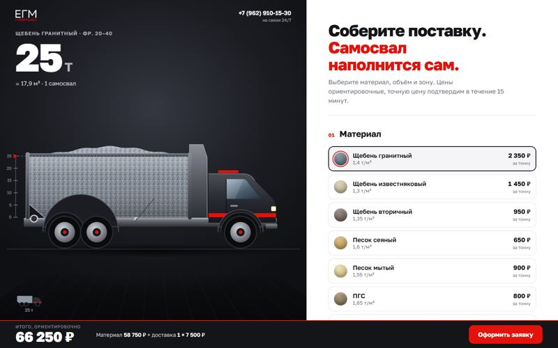
09конфигуратор как у Tesla или PorscheСлева полноэкранная визуализация кузова самосвала (SVG), он наполняется материалом выбранного цвета по мере объёма. Справа шаги опций.…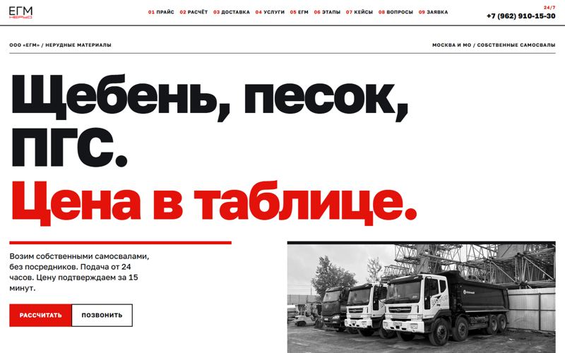
10швейцарский или брутальный типографический стильСтрогая модульная сетка, прайс оформлен таблицей, моноширинные цифры, огромные номера разделов, никаких скруглений. Чёрно-белый с красными…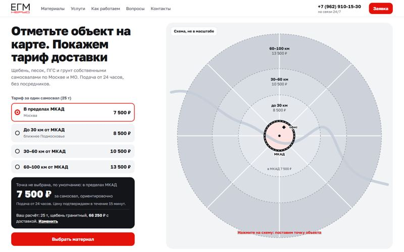
11сайт от картыПервый экран — SVG-схема Москвы: МКАД и кольца 30, 60 и 100 км. Клик по зоне показывает тариф и срок, точка объекта ставится кликом. Затем…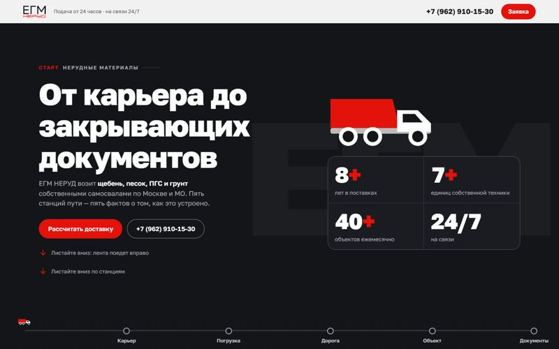
12горизонтальный сторителлингПуть «Карьер → Погрузка → Дорога → Объект → Документы» прокручивается горизонтально (на десктопе вертикальный скролл двигает ленту). На…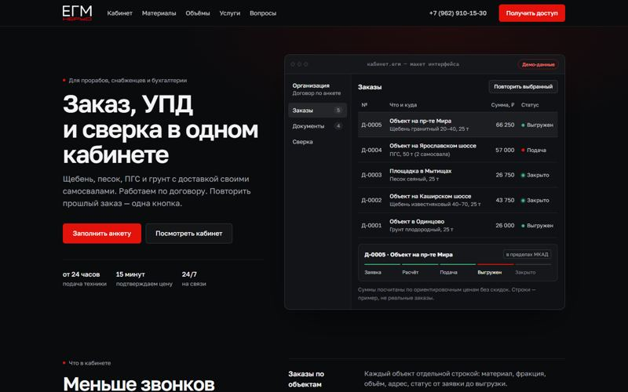
13B2B-портал в стиле Linear/Stripe, тёмныйДля прорабов и снабженцев: «Кабинет, документы, УПД, сверка, повтор заказа». Показ интерфейса кабинета как иллюстрация. Тарифы по объёмам.…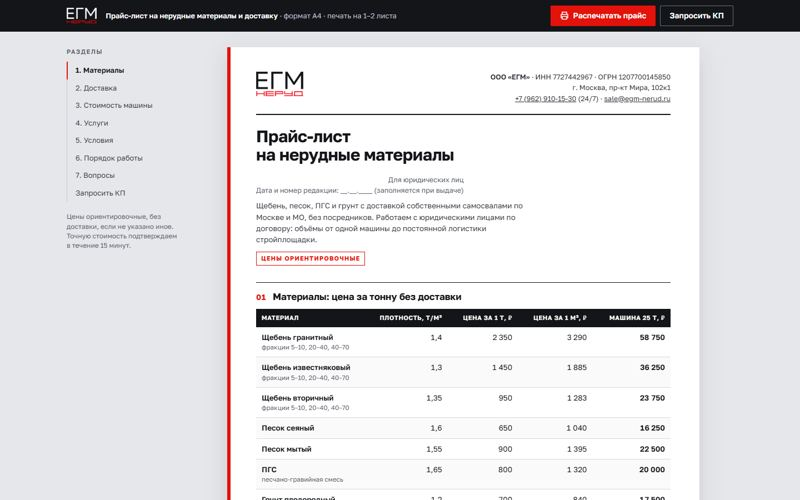
14прайс-лист и тендерный документСтраница выглядит как аккуратный официальный прайс А4: шапка с реквизитами, таблицы цен по материалам и зонам, условия, кнопки «Скачать…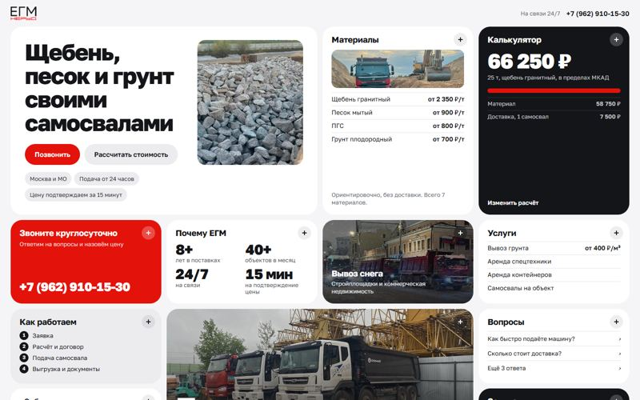
15всё на одном экране bento-сеткой, как на презентациях AppleПлитки разного размера: материалы, калькулятор, телефон, цифры, снег. Клик по плитке раскрывает её на весь экран с подробностями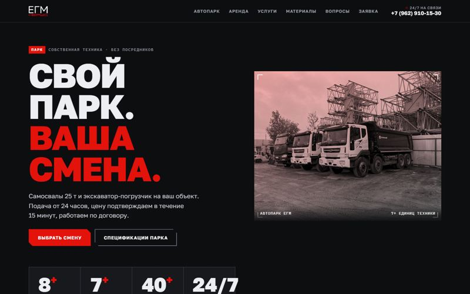
16тяжёлая техника (CAT, Volvo CE, Komatsu)Тёмная индустриальная эстетика, спецификации автопарка: самосвалы 25 т, экскаватор-погрузчик, типовые характеристики с пометкой…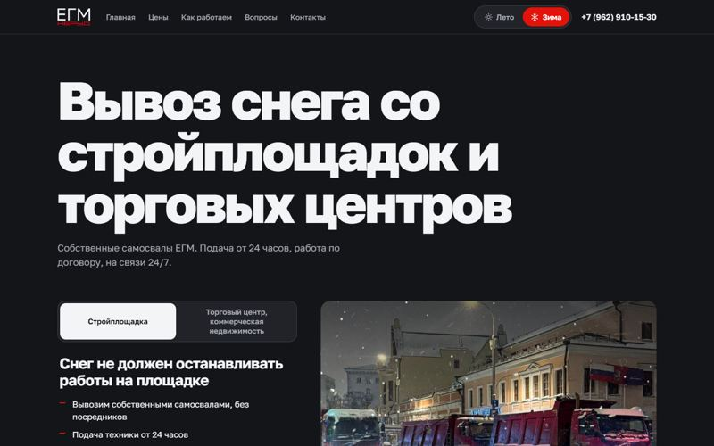
17сезонный переключатель «Лето / Зима» в шапкеОн целиком перестраивает сайт: зимой упор на вывоз снега с ТЦ и стройплощадок, летом на материалы и грунт. По умолчанию выбран сезон по…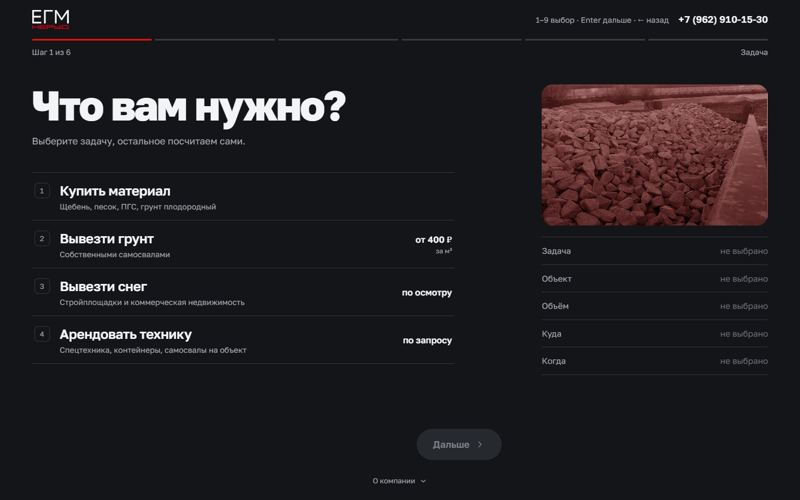
18воронка-квиз на весь экран, шаг за шагом: Задача → Материал → Объём → Куда → Когда → КонтактыПрогресс-бар, расчёт в конце. Под квизом короткая страница доверия. Премиальная, а не «маркизная» эстетика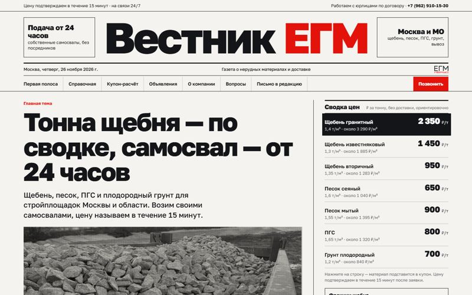
19газета «Вестник ЕГМ» в формате broadsheetКолонки, заголовки-кегли, «курс щебня» как биржевая сводка, объявления-услуги, рубрика вопросов. Серифный заголовочный шрифт допустим, если…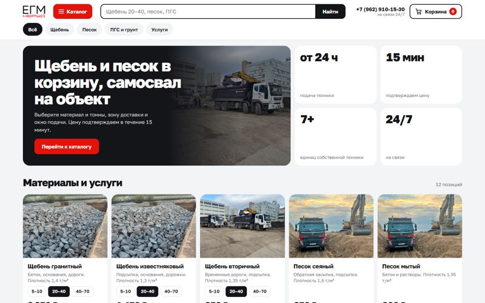
20маркетплейс в стиле Ozon или Яндекс МаркетаКарточки товаров с кнопкой «В корзину», выбор количества, слот доставки (дата и время), корзина и оформление в боковой панели. Шапка с…